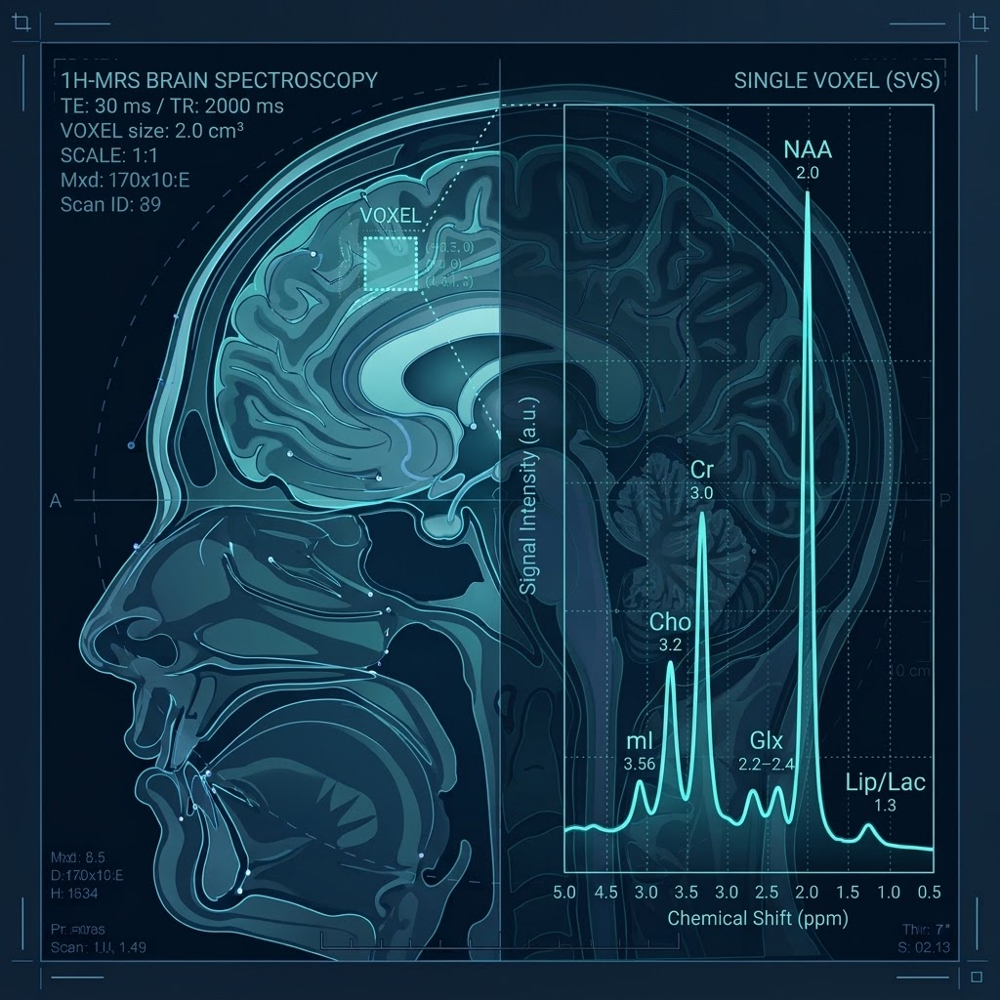

Analysis
Gannet
Automated processing and quantitative analysis for edited MRS, with documentation and openly available source code.
GitHub repository ↗Open software, documented workflows, and interoperable data standards make sophisticated MR methods more accessible and results easier to evaluate and reuse.
A free, open-source MATLAB toolkit for automated processing and quantitative analysis of edited MRS data.

Gannet provides an established workflow for loading, processing, modeling, co-registering, and reporting edited MRS data. The project supports research use across scanner vendors and evolving community data formats.
Automated processing and quantitative analysis for edited MRS, with documentation and openly available source code.
GitHub repository ↗A standard representation for spectroscopy data that supports interoperability between tools and research groups.
Standard repository ↗An extension of the Brain Imaging Data Structure for organizing MRS data and metadata in a consistent, shareable form.
Read the paper ↗Document the path from raw signal to reported measurement so choices can be inspected and reproduced.
Use shared formats and metadata conventions to reduce friction between acquisition, analysis, and archive systems.
Build tools and standards collaboratively so they reflect diverse scanners, workflows, and research needs.